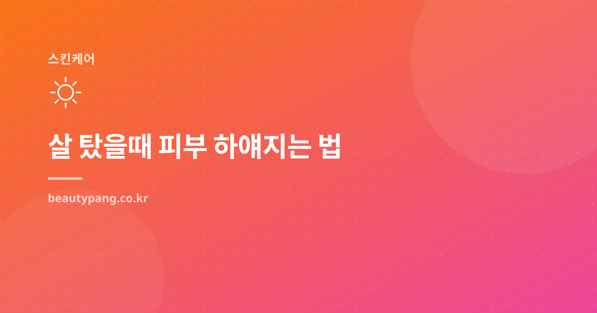

여름에는 뜨거운 태양이 내리쬐는 탓에 시원한 계곡이나 바다, 워터파크 등 물이 있는 곳으로 더위를 피하려 가는 사람들이 많이 있습니다. 하지만 쨍쨍한 햇빛에 탄 빨개지고 아픈 피부때문에 고민이 이만 저만이 아닐때가 한 두번이 아닙니다. 노는 것보다 놀 고난 후의 관리가 더 중요한 여름철 피부관리. 오늘은 물놀이 후 탄 피부 복구 시키는 법과 살을 타지 않게 하는 예방하는 방법에 대하여 알아보도록 하겠습니다.
- 자외선 차단하기
최대한 햇볕을 피하고 늦은 아침과 오후 햇볕을 피하도록 합니다. 햇볕이 뜨거울 때 밖에 나가야 한다면 그늘이 있는 곳에 있도록 하며 그늘이 없다면 우산으로 햇볕을 가립니다. 보통 비 올 때 쓰는 검정 우산은 자외선도 90% 이상 차단합니다. 태양광과 자외선은 콘크리트, 물, 모래, 눈, 기타 표면에 반사되니 주변 환경을 잘 파악하는 것도 자외선 차단 하는데 도움을 줄 수 있습니다.
여름철 필수템인 자외선 차단제를 미리미리 바르는 것을 권장합니다. UVA(피부를 노화시키는 자외선)와 UVB(피부에 일광화상을 입히는 자외선)를 차단하는 광범위 자외선 차단제를 고르는 것이 좋습니다. SPF(자외선 차단지수)가 30-50인 자외선 차단제를 고르도록 합니다. SPF가 50 이상이라도 크게 더 효과적이지는 않기 때문에 굳이 SPF가 가장 높은 자외선 차단제를 살 필요는 없습니다. 날씨가 추운 겨울철에도 여전히 자외선에 노출되기 때문에 일년 내내 매일 자외선 차단제를 바르는 것이 좋습니다. 특히나 고지대에서 겨울 스포츠를 즐길 때는 더더욱 자외선 차단제를 철저히 발라야 한다는 것을 잊지 않으셔야 합니다.
여름 옷의 경우 대부분 햇볕을 제대로 차단하지 못 합니다. 옷감의 자외선 차단지수를 나타내는 UPF를 확인하고 소매와 단이 길고 높은 카라가 달린 옷을 고르는 것이 좋으며 선글라스, 장갑, 챙이 넓은 모자를 착용해 주면 좋습니다. 체내에서 비타민 D를 합성하려면 햇볕을 쪼여야 하지만 이를 위해서 보호장비 없이 20분 이상 햇볕을 쪼일 필요는 없습니다.
- 베이킹 소다 물에 타서 바르기
피부에 자극이 적고 피부 관리에 효과적이며 각질 제거에도 좋은 베이킹 소다를 물에 타서 바르면 피부를 하얗게 하는데 도움을 줄 수 있습니다. 찬물에 베이킹 소다를 풀어서 탄 피부에 바른 후 약 15분정도 지난 후에 물로 씻으면 됩니다.
장시간 야외활동으로 인하여 피부가 붉게 물든 경우는 가벼운 화상을 입은 것입니다. 이렇게 피부가 탔을 때 가장 쉽게 응급처치를 해줄 수 있는 방법은 시원한 물에 몸 전체를 담가주는 것이 가장 간단하고 효과가 빠른 방법입니다. 이때 주의할 점은 샤워타월을 이용하거나 클렌징 제품을 사용하는 것은 피부에 자극을 줄수 있기 때문에 상태를 더 악화시킬 수 있으므로 피하는 것이 좋습니다.
또한 피부에 수분이 보충되도록 충분한 양의 물을 마셔주면 피부가 스스로 재생하는 작업을 진행하게 되는데 햇빛에 노출되면 체내 수분이 손실되고 피부도 건조해지기 때문에 피부가 햇빛에 탔을 때 손실된 수분을 보충해주는 것이 중요합니다. 이때 중요한건 다른 음료 보다 물을 많이 마시는 것이 가장 좋으며 녹차나 홍차의 항산화 성분도 햇빛으로 인한 활성산소 손상을 회복하는데 도움을 줄 수 있습니다.
가장 일반적으로 알고 있는 방법은 피부진정에 좋은 성분들이 들어가 있는 감자나 오이, 알로에로 피부의 붉은 부분을 최대한 잠재워 주는 것이 좋습니다. 천연팩 중에서 살이 탔을 때 가장 효과적인 것은 감자팩인데 감자는 피부 진정을 도와줄 뿐만 아니라 미백, 보습 효과가 좋아 살이 탔을 때 사용하면 좋습니다. 하지만 감자팩을 만들 때 감자 싹은 깨끗하게 잘라내고 사용해야 합니다. 감자팩은 만드는 법도 아주 간단한데 마트에서 파는 일반 감자를 얇게 슬라이스해서 피부에 넓게 얹기만 하면 됩니다. 칼질이 어우면 강판에 갈아서 탄 부분에 올려줘도 되는데 만약에 보습력을 더 키우고 싶다면 꿀을 섞어서 사용하는 것도 좋은 방법입니다.
감자팩 만큼 진정효과가 좋은 것으로는 알로에가 있는데 피부 회복에 도움을 주고 화상으로 인한 통증 감소와 염증 예방에도 도움을 줍니다. 냉장 보관한 알로에를 바르면 피부가 더 시원해지는 효과가 있습니다.
살 탔을 때 가장 주의해야 할 사항은 물집이 생겼을 경우 절대 물집을 터뜨리면 안됩니다. 물집을 터뜨리거나 살갗을 벗기면 심할 경우 세균이 감염되서 더 심한 피해를 입을 수 있기 때문에 물집이 생겼다면 건드리지 말고 심한 경우 병원에 가서 치료를 받는 것이 좋습니다.
피부가 탄 부위에 보습제를 가능하면 하루 종일 발라주고 최대한 수분이 잘 흡수되도록 목욕 직후 발라주는 것이 좋습니다. 당장 보습제가 없다면 베이비오일, 코코넛오일, 꿀 등을 보습제 대신 발라주어도 좋습니다.
함께 보면 좋은 계산기